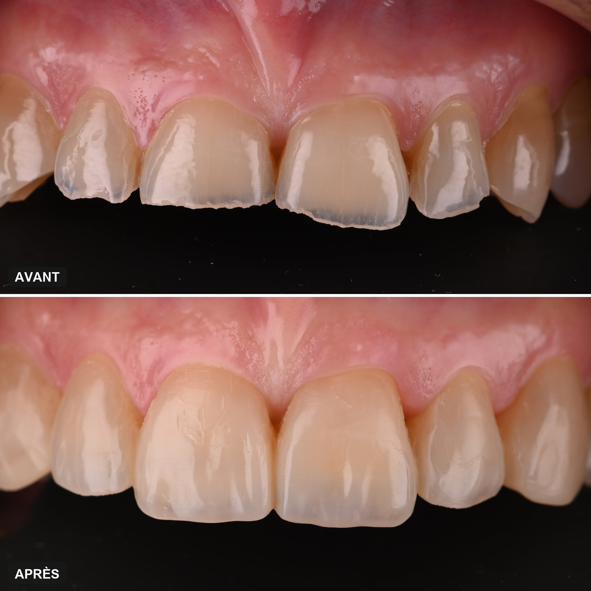
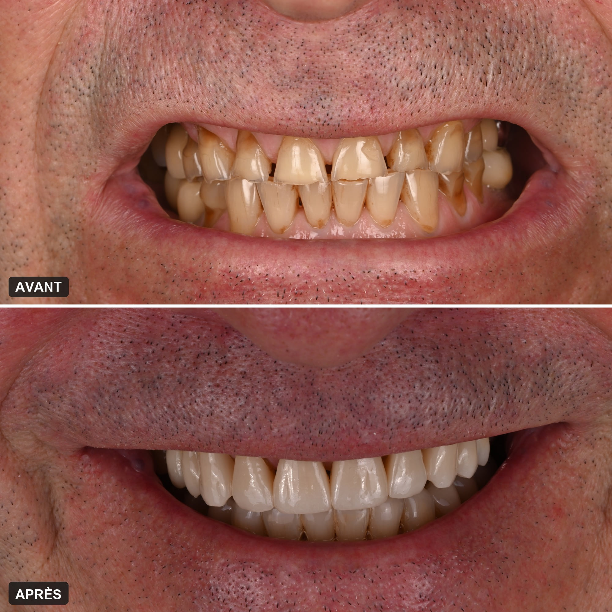
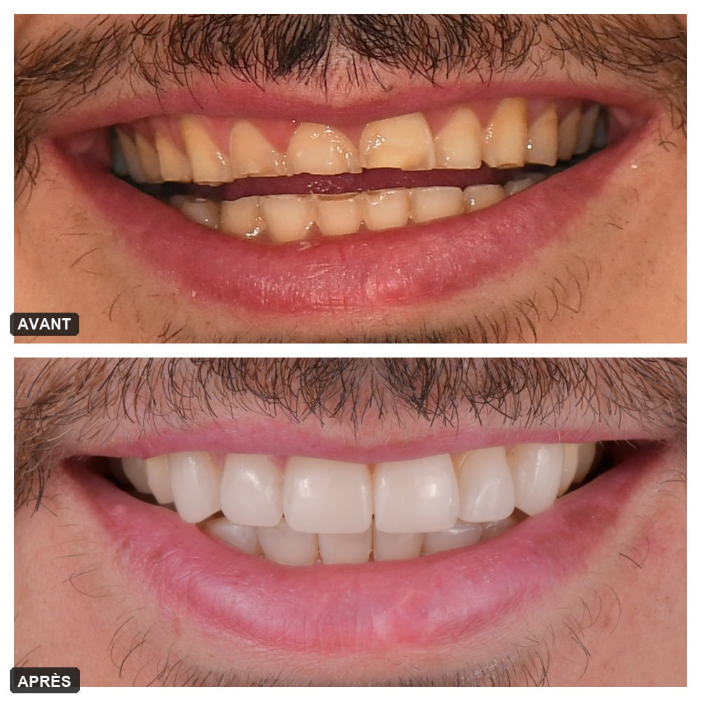
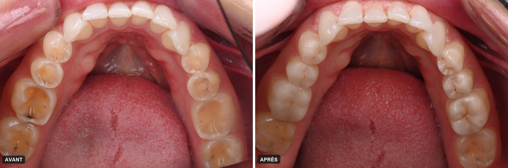
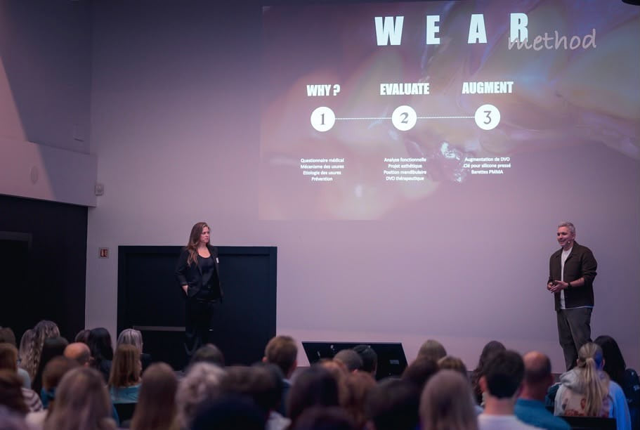

Accueil › Patient › Usure dentaire
Le sujet
Usure dentaire
Causes, signes et traitements
L’usure dentaire est la perte progressive et irréversible de l’émail, puis de la dentine, sans carie ni choc. Sous l’effet des acides, du frottement des dents entre elles ou d’un brossage trop appuyé, les dents raccourcissent, s’aplatissent et se fragilisent. Elle se surveille, se freine et, quand c’est utile, se reconstruit — à condition d’en avoir d’abord compris la cause.

Responsable de la consultation des internes en dentisterie esthétique et usures, Pitié-Salpêtrière

1 / 6
Qu’est-ce que l’usure dentaire ?
C’est une perte de substance dentaire qui ne doit rien à la carie : l’émail s’amincit, puis la dentine apparaît, plus tendre, qui s’use à son tour plus vite. Ce qui est perdu ne repousse pas.
Une dent usée n’est pas un diagnostic : c’est un signe, dont il faut trouver la cause avant de réparer quoi que ce soit.
Usure normale ou usure qui pose problème
Les dents s’usent un peu tout au long de la vie, et c’est normal. L’usure devient un problème quand elle est trop rapide pour l’âge, quand elle provoque des sensibilités ou une gêne, quand elle abîme le sourire ou qu’elle menace la solidité des dents : c’est la définition retenue par le consensus européen sur l’usure dentaire sévère.
Un problème de plus en plus fréquent
Dans une grande étude menée dans sept pays européens auprès de plus de 3 000 jeunes adultes de 18 à 35 ans, près de trois sur dix présentaient déjà une usure érosive modérée à sévère. Boissons acides, reflux, stress : l’usure n’est plus une affaire d’âge.
En bref
- Une perte d’émail puis de dentine, sans carie
- Irréversible : la dent ne se reconstitue pas seule
- Fréquente dès l’âge adulte jeune
- Elle se freine si sa cause est traitée
2 / 6
Pourquoi mes dents s’usent-elles ?
Quatre mécanismes peuvent user les dents, et ils se combinent souvent. C’est pourquoi le bruxisme, accusé d’office dès que les dents sont plates, n’explique pas tout.
L’érosion : les acides
Les acides dissolvent l’émail sans qu’aucune bactérie n’intervienne. Ils viennent de l’alimentation — sodas, même sans sucre, boissons énergétiques, jus et agrumes, vinaigrettes, grignotage acide — ou de l’estomac : reflux, vomissements répétés, troubles des conduites alimentaires. Une surface ramollie par l’acide s’use ensuite beaucoup plus vite au moindre frottement.
L’attrition : les dents contre les dents
Serrer ou grincer des dents, de jour comme de nuit, use les surfaces qui se rencontrent : bords des incisives, pointes des canines, sommets des molaires. Mais une dent plate ne prouve pas un bruxisme.
L’abrasion : un frottement extérieur
Un brossage trop appuyé, une brosse dure, un dentifrice abrasif ou certaines habitudes — stylo, ongles — usent surtout le collet des dents, près de la gencive.
L’abfraction : au collet de la dent
Des encoches en coin au ras de la gencive, attribuées aux contraintes de la mastication : un mécanisme encore discuté, presque toujours associé aux autres.
Dans la réalité, ces mécanismes s’additionnent : l’acide fragilise, le frottement emporte. Traiter l’un sans voir l’autre, c’est voir l’usure reprendre, y compris sur les restaurations.
 En vidéo · 52 sL’érosion dentaireVoir la vidéo →
En vidéo · 52 sL’érosion dentaireVoir la vidéo →

Les quatre formes d’usure
- Érosion — acides alimentaires ou gastriques
- Attrition — dents contre dents, bruxisme
- Abrasion — brossage, objets
- Abfraction — contraintes au collet, discutée
Érosion dentaire · Bruxisme · Troubles des conduites alimentaires
3 / 6
Comment savoir si mes dents sont usées ?
L’usure s’installe sans douleur, sur des années : on la remarque souvent tard, sur une photo ou dans le miroir. Certains signes doivent faire consulter tôt.
Ce que vous pouvez remarquer
Des dents qui paraissent plus courtes qu’avant, des bords fins, translucides ou ébréchés, des surfaces lisses et aplaties, de petites cupules sur les molaires, une teinte plus jaune parce que la dentine transparaît sous l’émail aminci, des sensibilités au froid ou aux aliments acides, d’anciennes restaurations qui semblent dépasser de la dent.
Quand consulter
Dès l’apparition de l’un de ces signes, et sans attendre si vous souffrez de reflux, de vomissements, ou si l’on vous a dit que vous grinciez des dents. Plus le bilan est fait tôt, plus la prise en charge est simple : on protège ce qui reste au lieu de reconstruire ce qui manque. Des dents qui raccourcissent en sont souvent le premier signe visible.
Les signes qui alertent
- Les dents paraissent plus courtes
- Les bords deviennent fins, translucides ou ébréchés
- Les surfaces s’aplatissent, de petites cupules se creusent
- Sensibilité au froid ou à l’acide
- Les anciennes restaurations dépassent
- Le sourire découvre moins les dents
4 / 6
Est-ce grave ? Ce que dit le bilan d’usure
Pas forcément, mais ce n’est jamais anodin, puisque rien ne repousse. La vraie question est de savoir si l’usure est encore active, à quelle vitesse elle progresse et pourquoi : c’est l’objet du bilan d’usure.
Une enquête avant tout geste
Le bilan commence par un entretien précis : alimentation et boissons, reflux, vomissements, médicaments qui assèchent la bouche, serrement ou grincement, habitudes de brossage. Les causes se lisent aussi sur les dents : la forme et la place des lésions orientent vers l’acide, le frottement, ou les deux.
Mesurer pour pouvoir comparer
Photographies standardisées et empreinte numérique fixent un état de référence. L’indice BEWE note la sévérité de l’usure dans chaque secteur de la bouche. Seule la comparaison d’un contrôle à l’autre dit si l’usure progresse encore.
Analyser la mécanique
Quand l’usure est avancée, il faut aussi analyser la mécanique de la bouche : la façon dont les dents se rencontrent, la position de la mâchoire, la hauteur perdue. Toute reconstruction durable repose sur cette analyse.
Ce qui en découle
Une usure légère et stable se surveille. Une usure active se traite d’abord à sa cause. Une usure qui gêne, fait souffrir ou menace les dents se reconstruit.
Ce que comprend le bilan d’usure
- Entretien alimentaire et médical
- Photographies standardisées
- Empreinte numérique de référence
- Indice BEWE, secteur par secteur
- Analyse de l’occlusion et de la hauteur des dents
- Comparaison à distance
5 / 6
Comment soigner l’usure dentaire ? Peut-on réparer des dents usées ?
Oui, on peut réparer des dents usées. Mais l’ordre compte : d’abord arrêter ce qui use, ensuite rendre aux dents ce qu’elles ont perdu, en ajoutant de la matière plutôt qu’en les taillant.
D’abord, arrêter la cause
Conseils alimentaires, prise en charge d’un reflux avec le médecin, gouttière de protection la nuit en cas de bruxisme, dentifrice fluoré et brossage adapté. Restaurer sur une usure encore active, c’est la voir reprendre sur les restaurations.
Ensuite, reconstruire en ajoutant
Les techniques collées permettent aujourd’hui de reconstruire sans tailler les dents, ou presque : composite stratifié pour rallonger et redonner forme aux dents de devant, facettes en céramique ou en composite, onlays et overlays collés pour recouvrir les molaires usées.
Composite ou céramique : le matériau vient après le projet
Le composite stratifié reconstruit en ajoutant, permet d’essayer des formes, de traiter de nombreuses dents en gardant l’émail, et il se répare facilement. La céramique, en pièces collées fabriquées au laboratoire, prend le relais quand le volume à reconstruire est important, ou quand les contraintes mécaniques ou esthétiques le justifient. Un même patient reçoit souvent les deux.
Quand l’usure est avancée : la réhabilitation des dents usées
Quand les dents ont beaucoup perdu, il faut souvent leur rendre leur hauteur : c’est l’augmentation de la dimension verticale. Une dent usée n’impose pas pour autant de « remonter » l’occlusion : la décision dépend de la place nécessaire pour reconstruire et du projet esthétique. Le projet se prévisualise et s’essaie en bouche avant d’être réalisé de façon définitive, souvent par étapes ; une longue phase de test avec un appareil amovible n’est plus systématique, elle reste utile dans certains cas.
Comment se déroule une réhabilitation
Dans les cas complexes, la planification compte presque autant que la réalisation : photographies, empreinte numérique, analyse esthétique et fonctionnelle, projet des futurs volumes, choix de la hauteur, puis réalisation progressive et entretien. La durée dépend du nombre de dents, de la stabilisation d’une érosion, des matériaux et d’une éventuelle phase intermédiaire : elle est précisée au bilan.
Le moins de couronnes possible
Une couronne impose de tailler la dent tout autour. L’approche additive, recommandée par le consensus européen, préserve au maximum l’émail restant, sans dévitaliser les dents par principe, et les réhabilitations peu invasives donnent de bons résultats dans le temps. Une couronne reste possible : elle n’est simplement plus le point de départ.

Les solutions, de la plus légère à la plus complète
- Prévention et surveillance
- Composite collé
- Facettes
- Onlays et overlays collés
- Réhabilitation complète, avec augmentation de la dimension verticale
Avant / après

Cas cliniqueUsures dentaires : du diagnostic aux facettes minimalement invasivesUne anamnèse approfondie pour comprendre des lésions particulières, avant une réhabilitation par facettes.
6 / 6
Quel dentiste consulter pour une usure dentaire ?
C’est la décision la plus importante pour vos soins. Une usure avancée ne se répare pas comme une carie : il faut en trouver les causes, analyser la façon dont les dents se rencontrent et planifier la reconstruction. Mal conduite, elle peut compromettre durablement le confort et la mastication. Mieux vaut la confier à un chirurgien-dentiste qui en a une réelle expérience.
L’expérience avant tout
L’expérience du praticien est ce qui compte. La prise en charge des usures demande de maîtriser à la fois le diagnostic des causes, l’analyse de l’occlusion et les techniques de reconstruction collée : une compétence qui s’acquiert cas après cas, et qui fait toute la différence entre une restauration qui dure et une restauration qui casse.
Le Dr Franck Moyal et les usures
Le Dr Franck Moyal est un chirurgien-dentiste spécialisé dans la prise en charge des usures. Ses confrères l’invitent très régulièrement à enseigner ce sujet : ARTEMIS Formations, Alpha Omega à Paris et à Marseille, Alpha Omega Jeunes Paris, Entretiens de Garancière. Il le transmet aussi dans ses propres formations, Smile Club Formations. À la Pitié-Salpêtrière, il est responsable de la consultation des internes en dentisterie esthétique et usures.
Si vos dents s’usent, faites le point avec un praticien dont c’est le domaine : c’est la meilleure garantie d’un traitement juste, ni trop tôt, ni trop tard, ni plus invasif que nécessaire.


Questions fréquentes
Mes dents s’usent : est-ce grave ?
Pas forcément, mais ce n’est pas anodin : le tissu perdu ne repousse pas. Ce qui compte est de savoir si l’usure est encore active, à quelle vitesse elle progresse et pourquoi. Une usure légère et stable se surveille ; une usure active se traite d’abord à sa cause.
Est-il possible de réparer des dents usées ?
Oui. Une fois la cause identifiée et maîtrisée, on reconstruit ce que l’usure a enlevé en ajoutant de la matière : composite collé, facettes, onlays ou overlays, et, pour une usure avancée, une réhabilitation complète qui rend aux dents leur hauteur. Le plus souvent sans tailler les dents.
L’émail usé peut-il se reconstituer ?
Non. L’émail ne se régénère pas : ce qui est perdu l’est définitivement. Le fluor renforce la surface restante et freine l’usure, mais seule une restauration rend le volume perdu.
Est-ce forcément du bruxisme ?
Non. Le bruxisme est souvent accusé dès que les dents sont plates, mais une érosion acide — alimentation, reflux, vomissements — ou la combinaison de plusieurs facteurs est fréquente. Une dent usée n’est pas un diagnostic : il faut en chercher la cause avant de la réparer.
Comment savoir si l’usure continue ?
En comparant dans le temps. Des photographies standardisées et une empreinte numérique fixent un état de référence, et l’indice BEWE classe la sévérité par secteur. Seule la comparaison à distance dit si l’usure progresse encore.
Faut-il reconstruire les dents usées ?
Pas toujours. Prévention, conseils et surveillance suffisent dans bien des cas. Quand une reconstruction est indiquée, elle se fait le plus souvent en ajoutant de la matière, en composite ou par des pièces collées, après contrôle de la cause : reconstruire sur une érosion non maîtrisée expose à une récidive.
Que puis-je faire moi-même ?
Repérer et espacer les expositions acides — sodas même sans sucre, agrumes, boissons énergétiques —, ne pas brosser fort, utiliser un dentifrice fluoré adapté, signaler un reflux. Et faire un bilan de référence tôt, pour avoir un point de comparaison.
Combien coûte le traitement d’une usure dentaire ?
Le prix est établi de manière personnalisée, selon l’étendue de l’usure et le traitement retenu, et vous est remis après le bilan, avant tout engagement.
Faire le point sur une usure dentaire
Comprendre l’origine de l’usure et son évolution, avant d’envisager quoi que ce soit.
Prendre rendez-vousSources scientifiques
Les références ci-dessous soutiennent les principaux messages cliniques de cette page.
- [1] Loomans B, Opdam N, Attin T, et al. Severe Tooth Wear: European Consensus Statement on Management Guidelines. J Adhes Dent. 2017. — DOI : 10.3290/j.jad.a38102 — PubMed
- [2] Bartlett DW, Lussi A, West NX, et al. Prevalence of tooth wear on buccal and lingual surfaces and possible risk factors in young European adults. J Dent. 2013;41(11):1007–1013. — DOI : 10.1016/j.jdent.2013.08.018 — PubMed
- [3] Schlueter N, Amaechi BT, Bartlett D, et al. Terminology of Erosive Tooth Wear: Consensus Report of a Workshop Organized by the ORCA and the Cariology Research Group of the IADR. Caries Res. 2020. — DOI : 10.1159/000503308 — PubMed
- [4] Carvalho TS, Colon P, Ganss C, et al. Consensus report of the European Federation of Conservative Dentistry: erosive tooth wear—diagnosis and management. Clin Oral Investig. 2015;19(7):1557–1561. — DOI : 10.1007/s00784-015-1511-7 — PubMed
- [5] Bronkhorst H, Kalaykova S, Huysmans MC, Loomans B, Pereira-Cenci T. Tooth wear and bruxism: A scoping review. J Dent. 2024. — DOI : 10.1016/j.jdent.2024.104983 — PubMed
- [6] Carvalho JC, Scaramucci T, Aimée NR, Mestrinho HDM, Hara AT. Early diagnosis and daily practice management of erosive tooth wear lesions. Br Dent J. 2018. — DOI : 10.1038/sj.bdj.2018.172 — PubMed
- [7] Bartlett D, Ganss C, Lussi A. Basic Erosive Wear Examination (BEWE): a new scoring system for scientific and clinical needs. Clin Oral Investig. 2008;12(Suppl 1):S65–S68. — DOI : 10.1007/s00784-007-0181-5
- [8] Schlenz MA, Schlenz MB, Wöstmann B, Glatt AS, Ganss C. Intraoral scanner-based monitoring of tooth wear in young adults: 36-month results. Clin Oral Investig. 2024. — DOI : 10.1007/s00784-024-05740-0 — PubMed
- [9] Fan J, Wang B, Wang L, et al. Clinical performance of minimally invasive full-mouth rehabilitation using different materials and techniques for patients with moderate to severe tooth wear: a systematic review and meta-analysis. Clin Oral Investig. 2025. — DOI : 10.1007/s00784-025-06181-z — PubMed
- [10] Ioannidis A, Pitta J, Panadero RA, et al. Rehabilitation Strategies and Occlusal Vertical Dimension Considerations in the Management of Worn Dentitions: Consensus Statement. J Esthet Restor Dent. 2025;37(3):702–706. — DOI : 10.1111/jerd.13432 — PubMed
- [11] Crins LAMJ, Opdam NJM, Kreulen CM, et al. Randomised controlled trial on testing an increased vertical dimension of occlusion prior to restorative treatment of tooth wear. J Oral Rehabil. 2023;50(4):267–275. — DOI : 10.1111/joor.13408 — PubMed